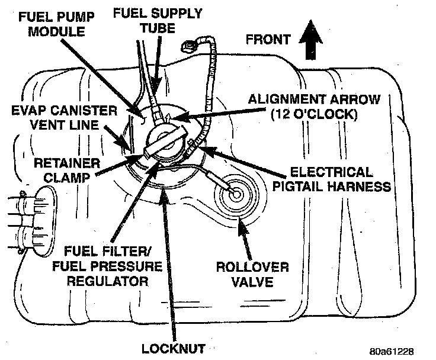
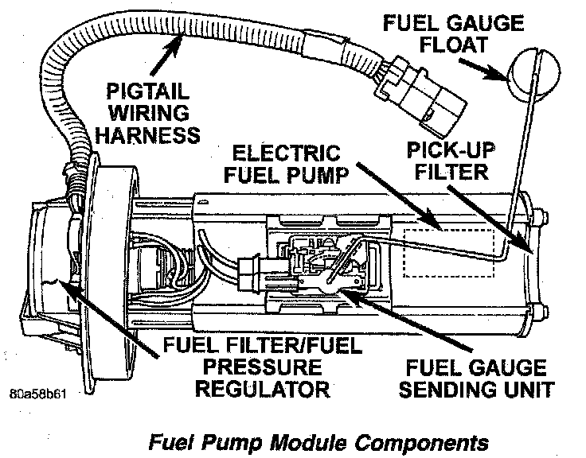
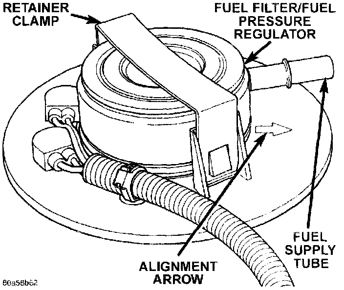
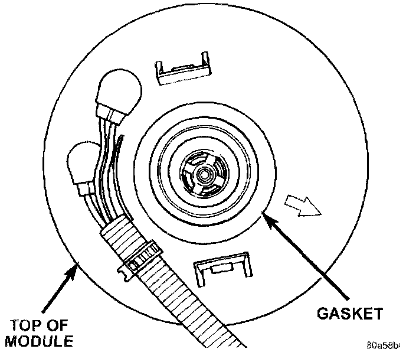
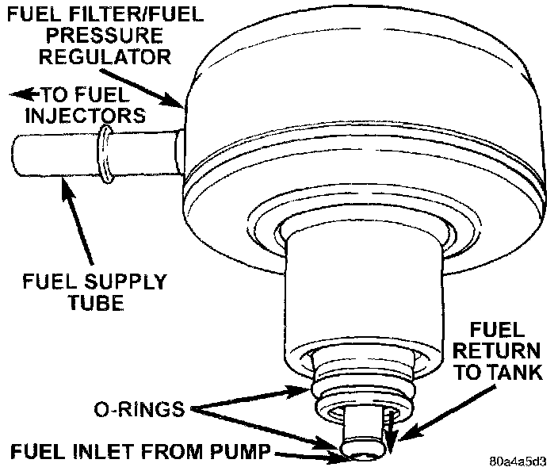

Fuel Filter: Locations


Fig. 22 Fuel Filter/Pressure Regulator:

Fig. 23 Fuel Filter/Regulator Gasket:

Fig. 24 Fuel Filter/Regulator O-rings:

The combination Fuel Filter/Fuel Pressure Regulator is located on the fuel pump module. The fuel pump module is located in top of fuel tank.